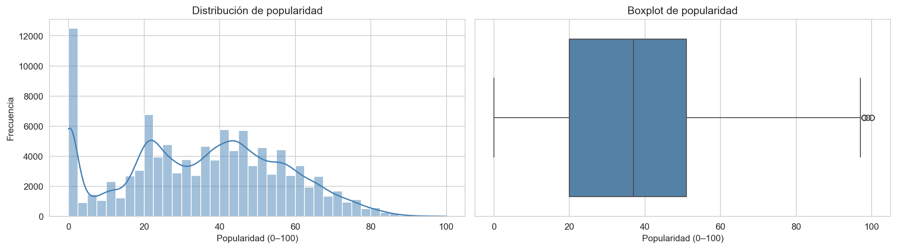
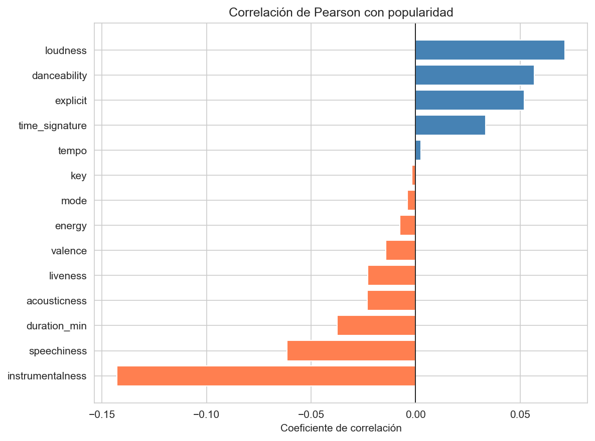
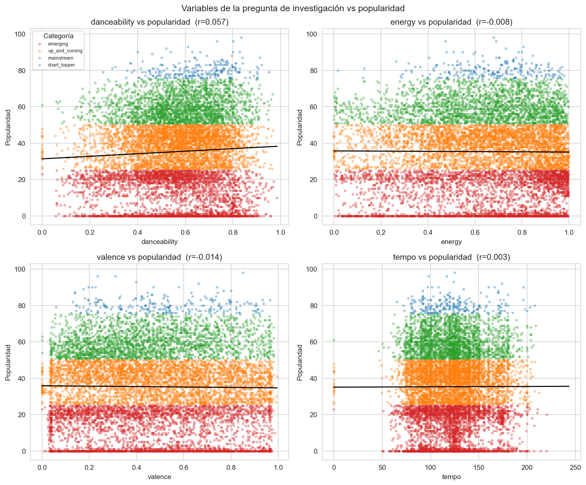
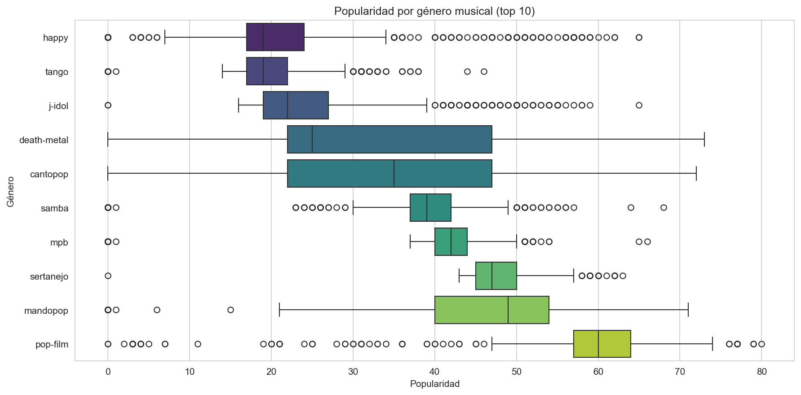
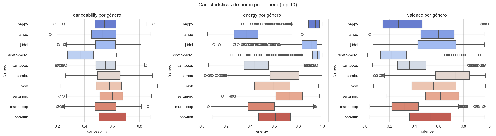
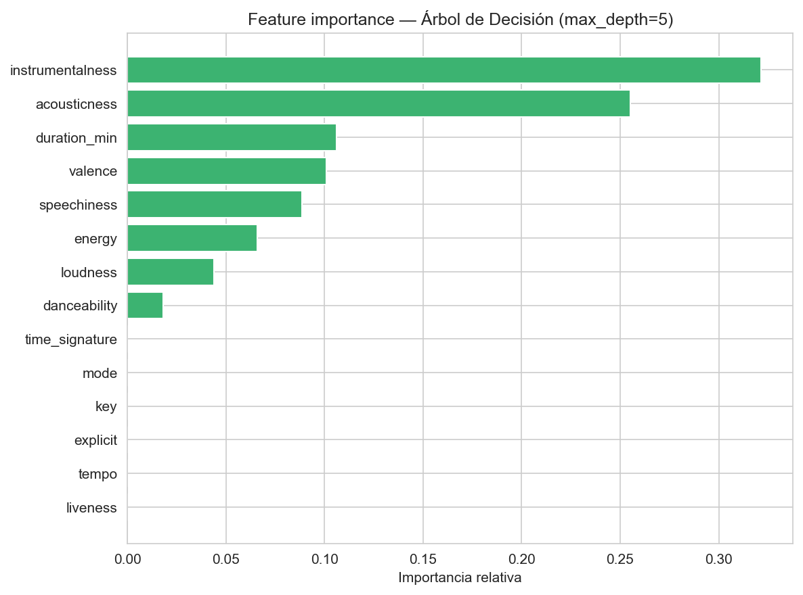
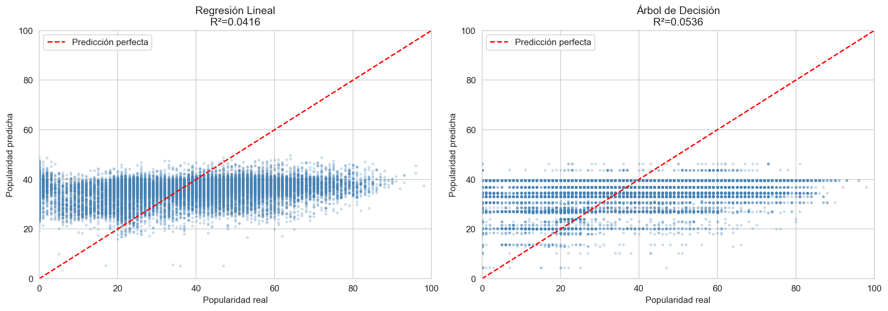

Universidad de Playa Ancha · Ingeniería en Informática · Primer Semestre 2026
Asignatura: Ciencia de Datos con Python (Optativo II) — Prof. Diego Saavedra Lizana
Integrantes: Martín Maturana · Vicente Tapia · Juan Pablo Poblete · Moisés Espinoza · Benjamín Burgos
¿Qué características de audio (danceability, energy, valence, tempo) predicen mejor la popularidad de una canción en Spotify, y varía este patrón según el género musical?
El dataset corresponde a Spotify Tracks Dataset con ~114.000 canciones y 20 columnas originales. Cada fila representa una canción única en el catálogo de Spotify con sus características de audio calculadas por la API de Spotify y su índice de popularidad (0–100), que refleja el volumen de reproducciones recientes.
Limpieza aplicada: se eliminaron las columnas track_id (hash interno sin valor analítico) y album_name (irrelevante para la pregunta). Se conservó track_name como identificador legible y track_genre como variable clave del análisis. Se eliminó 1 fila con nulos. No se encontraron duplicados. Se creó duration_min (duración en minutos) y popularity_cat (categorización en cuatro niveles: emerging, up_and_coming, mainstream, chart_topper).

La distribución de popularity presenta un pico pronunciado cerca de 0, lo que indica que la mayoría de canciones del catálogo tienen muy pocas reproducciones recientes. Esto responde en parte a la naturaleza del índice de Spotify: solo refleja actividad reciente, por lo que canciones antiguas o de nicho tienden a tener valores bajos independientemente de su calidad musical.
La distribución es asimétrica positiva (skewness > 0): pocas canciones alcanzan valores altos. Esta característica tiene implicancias directas para el modelo predictivo, ya que los modelos lineales asumen distribuciones más simétricas en la variable objetivo.

Las variables con mayor correlación con popularity son:
| Variable | Correlación | Dirección | Interpretación |
|---|---|---|---|
instrumentalness |
negativa | ↓ | Las canciones sin voz tienen menor popularidad en plataformas de streaming masivo |
acousticness |
negativa | ↓ | Las canciones acústicas tienden a ser menos populares en el catálogo general |
loudness |
positiva | ↑ | Canciones más fuertes predominan en géneros populares actuales |
explicit |
positiva | ↑ | Asociado a géneros dominantes como rap/trap que lideran el streaming |
Las 4 variables de la pregunta de investigación (danceability, energy, valence, tempo) muestran correlaciones moderadas o débiles con la popularidad global. Esto no significa que sean irrelevantes, sino que su efecto varía por género — algo que se analiza en la sección 3.
Todos los coeficientes son bajos (|r| < 0.3), lo que indica que ninguna variable de audio por sí sola es un predictor fuerte de popularidad. La popularidad es un fenómeno multifactorial que incluye marketing, posicionamiento en playlists y viralidad en redes sociales — factores no capturados en este dataset.

Cada panel muestra la relación entre una de las 4 variables de la pregunta y la popularidad, con los puntos coloreados por categoría y una línea de tendencia lineal.
danceability: tendencia positiva leve (r > 0). Las canciones más bailables tienden a ser algo más populares, pero la dispersión es alta — hay canciones muy bailables con baja popularidad y viceversa.energy: tendencia positiva leve. Los géneros energéticos (rock, electrónico, reggaeton) tienen buena representación en valores medios-altos de popularidad.valence: correlación casi plana. La positividad emocional de una canción no determina su popularidad — tanto canciones tristes como alegres pueden ser exitosas.tempo: correlación cercana a cero. El tempo no es un predictor significativo de popularidad a nivel global.
La popularidad mediana varía notablemente entre géneros. Los géneros con mayor mediana corresponden a estilos contemporáneos con fuerte presencia en el streaming actual, mientras que géneros de nicho presentan medianas más bajas, aunque con alta varianza interna (sus fans los escuchan intensamente pero son una audiencia menor).
Esto confirma que el género es un factor moderador de la relación entre características de audio y popularidad.

Las tres variables de la pregunta de investigación con patrón más diferenciado por género son:
danceability: géneros como dance, reggaeton y hip-hop presentan valores consistentemente altos. Géneros como classical o acoustic tienen valores bajos. Sin embargo, alta danceability no garantiza alta popularidad — depende del género.energy: los géneros más populares del dataset no son necesariamente los más enérgicos. Géneros acústicos tienen energy baja pero algunos tienen popularidad razonable en su nicho.valence: alta variabilidad dentro de cada género. El estado emocional de la música no sigue un patrón claro ligado a la popularidad del género.Conclusión de esta sección: el patrón característica de audio → popularidad sí varía por género. Una danceability alta predice mejor la popularidad en géneros urbanos que en géneros acústicos o clásicos.
Se entrenaron dos modelos para predecir popularity usando 14 features de audio y metadata:

El Árbol de Decisión asigna mayor importancia a variables que discriminan bien los niveles de popularidad en cada nodo de división. Las variables de la pregunta de investigación (danceability, energy, valence) aparecen en la mitad inferior del ranking, confirmando que no son los predictores más potentes a nivel global. instrumentalness y loudness concentran la mayor parte de la capacidad predictiva del modelo.

Ambos modelos presentan R² bajo, lo que era esperable dado el análisis de correlaciones. El Árbol de Decisión supera a la Regresión Lineal al capturar relaciones no lineales (por ejemplo, umbrales: canciones con instrumentalness > 0.5 tienden a tener popularidad baja independientemente de otras variables).
La dispersión de puntos alrededor de la línea de predicción perfecta es alta, especialmente para canciones con popularidad real entre 0 y 30 — el modelo tiende a sobreestimar su popularidad.
¿Qué características predicen mejor la popularidad?
Las variables con mayor poder predictivo no son las 4 de la pregunta (danceability, energy, valence, tempo) sino instrumentalness (negativa), loudness (positiva) y explicit (positiva). Las 4 variables de interés tienen correlaciones débiles con la popularidad global, aunque danceability y energy muestran patrones más claros dentro de géneros específicos.
¿Varía el patrón por género?
Sí. La relación entre características de audio y popularidad es moderada por el género. En géneros urbanos (reggaeton, hip-hop, trap), alta danceability y energy sí se asocian con mayor popularidad. En géneros acústicos o clásicos, estas mismas variables tienen menor poder predictivo.
Ambos modelos presentan R² bajo (< 0.15), indicando que las características intrínsecas de audio explican solo una fracción pequeña de la varianza en popularidad. Esto es consistente con la literatura: la popularidad en Spotify depende fuertemente de factores externos al audio como:
Proyecto desarrollado por: Martín Maturana, Vicente Tapia, Juan Pablo Poblete, Moisés Espinoza, Benjamín Burgos — UPLA 2026